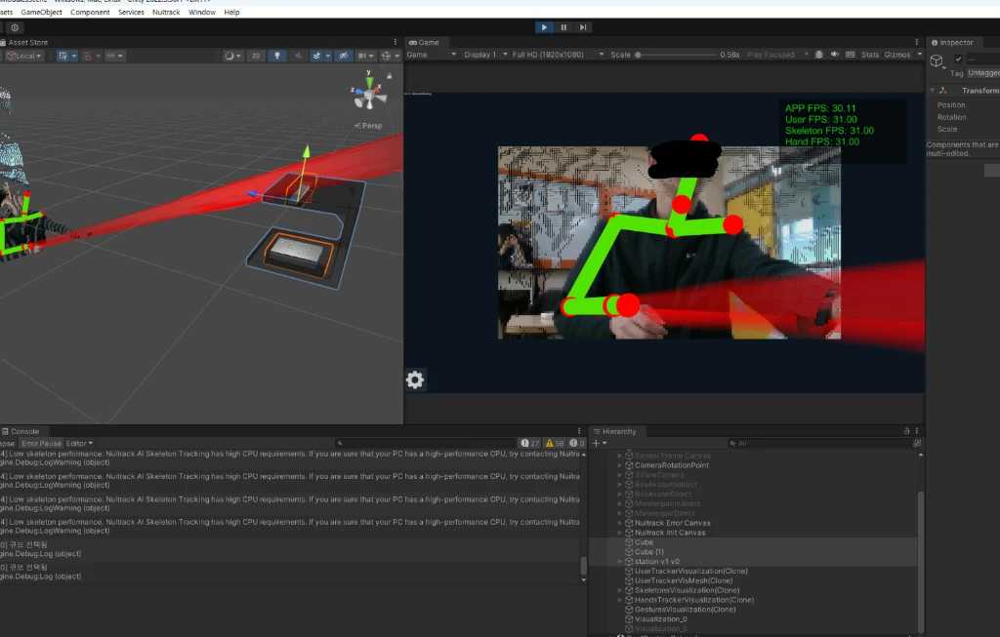
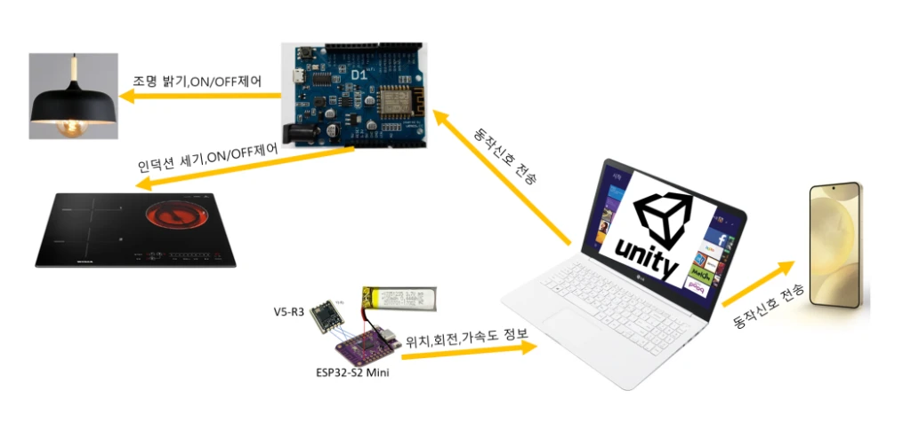
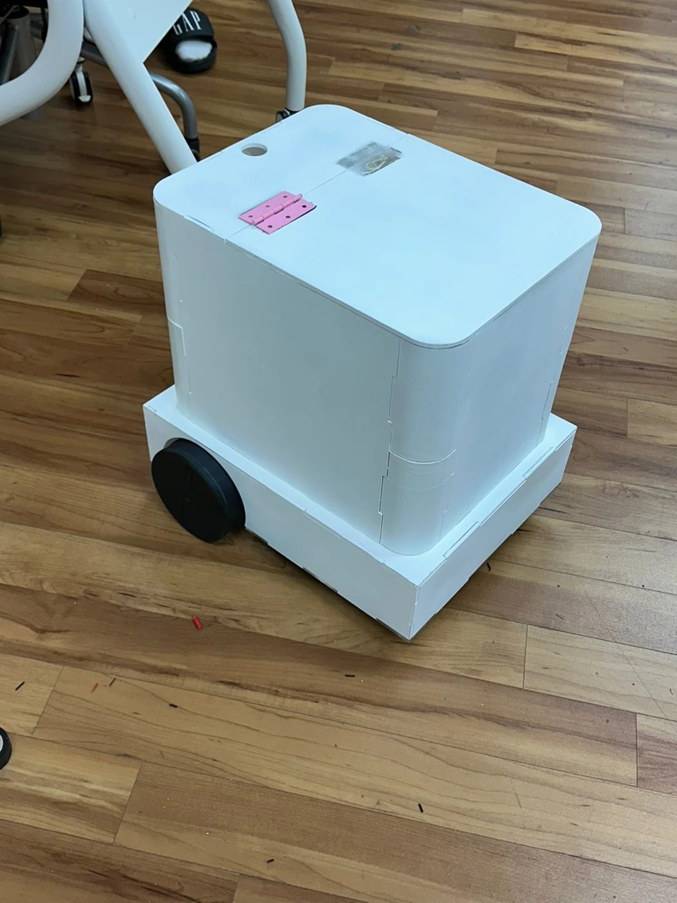
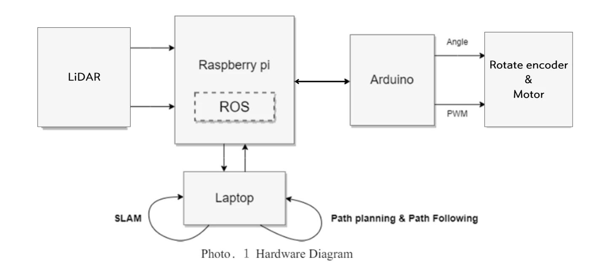
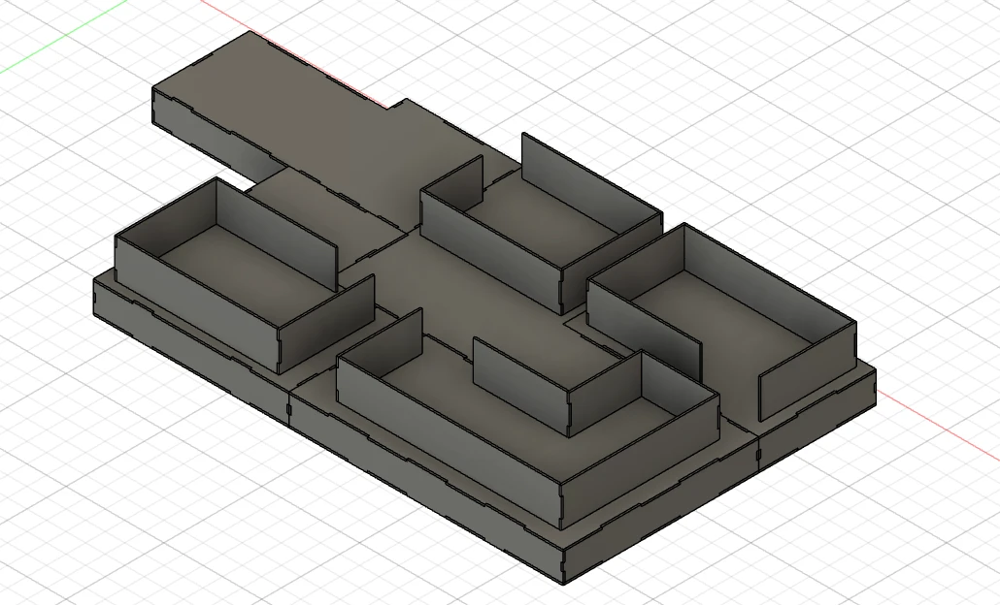
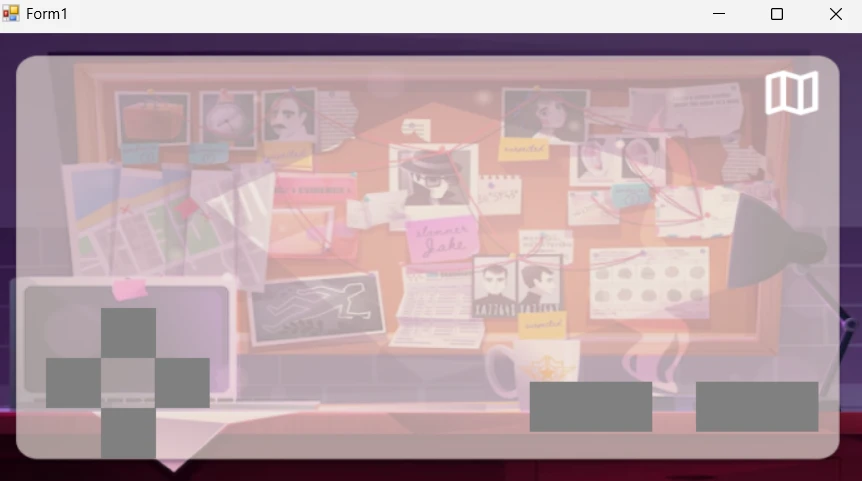

WORK EXPERIENCE / BUSAN 2024
배운 기술로,
각자의 문제를 풀다
모션으로 움직이는 주방, 학교용 배달 로봇, 게임판 위 작은 로봇까지. 2024년 미래내일 일경험에서 교육생들이 만든 여섯 가지 프로젝트와 멘토링의 기록입니다.
주방에서 학교로,
게임판에서 네트워크로
같은 교육을 출발점으로 삼아도 해결하고 싶은 문제는 달랐습니다. 교육생들은 동작 인식, 로봇 주행, 기구 제어와 데이터 분석을 자신들의 주제로 연결했습니다. 결과물뿐 아니라 센서를 바꾸고, 제어 역할을 나누고, 구현 범위를 조정한 과정까지 살펴봅니다.
 크게 보기 ↗
크게 보기 ↗VIMO 팀 결과보고서에 수록된 실물 모형과 화면. 본문의 이미지는 팀별 제출 자료에서 추출했습니다.
- 주제
- 주방·운반·게임·화훼
네트워크·대화 로봇 - 진행 기록
- 5월 7일~7월 2일 수행계획
6월 말~7월 초 결과보고 - 참여 역할
- 프로젝트 멘토링 · 최수길
기획·개발·결과물 · 교육생 팀
VIMO / WORK EXPERIENCE PROJECT
손동작을 주방 기기의 명령으로 바꾸다
부산소프트웨어마이스터고 · VIMO 팀
VIMO의 Vision Motion은 손이 바쁜 주방에서 몸의 움직임으로 기기를 제어하자는 아이디어에서 출발했습니다. 카메라로 사람의 위치와 동작을 읽고, Unity에 만든 주방 공간과 연결해 조명·환풍구·인덕션 등의 제어를 다루는 프로젝트입니다. 결과보고서에는 모형 주방, 인식 화면, 앱과 데이터베이스를 함께 구성한 결과가 남아 있습니다.
팀은 RealSense 깊이 카메라와 Nuitrack으로 몸의 움직임을 읽고, Python의 MediaPipe로 제스처를 처리했습니다. Unity에서는 공간 안의 대상과 동작을 연결하고, Python에서 데이터베이스 연결과 최종 데이터를 처리하는 구조를 택했습니다. 사용자 동작이 화면 속 변화에 그치지 않고 기기의 상태와 이어지도록 구성한 점이 핵심입니다.

크게 보기 ↗VIMO 결과보고서의 Unity 실습 화면. 몸의 움직임과 가상 공간의 대상 선택을 함께 확인합니다.

크게 보기 ↗같은 보고서의 시스템 구성도. 센서 입력과 제어 화면, 기기 사이의 연결을 정리했습니다.
- 카메라로 동작 읽기
- 공간 안의 대상 선택
- 제어 데이터 처리
- 기기 상태와 화면 연결
개발 과정에서 바뀐 점
처음에는 IMU 센서로 위치를 계산했지만 오차가 생겨 깊이 카메라를 사용하는 방식으로 변경했습니다. 앱과 데이터베이스를 연결할 때의 변수 접근 문제도 코드 구조를 다시 정리하며 다뤘습니다.
멘토링에서 짚은 다음 과제
멘토링에서는 데이터베이스 구조와 하드웨어 연결을 검토했습니다. 결과 피드백은 제스처 인식률과 오작동 개선, 기능 최적화를 다음 과제로 제시했습니다. 에너지 절감이나 주방 안전성 향상은 기대효과이며 측정된 성과로 소개하지 않습니다.
Foxy / WORK EXPERIENCE PROJECT
학교에서 필요한 물건을 목적지까지
부산소프트웨어마이스터고 · Foxy 팀
Foxy는 학교 행사 준비와 교내 물품 운반을 주제로 배달 로봇을 만들었습니다. 사용자가 스마트폰에서 로봇을 호출하고 출발지와 도착 지점을 지정하면, 로봇이 물건을 싣고 이동하는 흐름입니다. 로봇 자체의 주행과 함께 사용자가 요청을 보내는 화면까지 고민했습니다.
라이다로 주변을 살피고 SLAM으로 지도를 만든 뒤, Nav2로 목적지 이동을 연결했습니다. 보고서의 구성도에는 Raspberry Pi, Arduino, 모터와 엔코더가 나타납니다. 이동 명령이 실제 바퀴의 회전으로 이어지도록 제어부를 구성하고, 웹에서는 출발·이동 중·도착 등의 상태를 다루도록 했습니다.

크게 보기 ↗Foxy 결과보고서에 수록된 제작 기체. 상단에 물건을 실을 수 있는 형태로 구성했습니다.

크게 보기 ↗Foxy 결과보고서의 하드웨어 구성도. 라이다 입력과 로봇 제어, 모터 구동의 관계를 보여 줍니다.
- 웹에서 호출·목적지 지정
- 지도와 현재 위치 확인
- 목적지를 향해 이동
- 도착 상태 안내
개발 과정에서 바뀐 점
사전직무교육에서 배운 ROS2를 지도 작성과 이동 제어에 적용하고, 스마트폰에서 위치를 지정하는 UI까지 연결했습니다. 사용자의 요청을 로봇이 처리하는 작업으로 바꾼 사례입니다.
멘토링에서 짚은 다음 과제
멘토 피드백은 SLAM·Nav2 활용과 호출 UI를 긍정적으로 평가하면서, 실시간 지도 업데이트와 자동 충전을 확장 과제로 제안했습니다. 이를 이미 완성된 기능으로 포함하지 않았습니다.
Stern / WORK EXPERIENCE PROJECT
게임판 위 로봇이 단서를 찾아다닌다면
부산소프트웨어마이스터고 · Stern 팀
Stern은 무선 조종 로봇을 보드게임의 플레이어로 삼았습니다. 플레이어는 작은 로봇을 움직여 사진관·숙소·항구·구멍가게와 광장·도서관 구역을 탐색합니다. 버튼이나 진동감지센서를 작동시키면 화면에 단서가 나타나고, 이를 모아 답을 제출하는 방식입니다.
이 프로젝트는 로봇의 이동, 물리적인 게임판, 화면 속 이야기라는 세 요소를 연결합니다. 결과보고서에는 구역을 나눈 공간 설계와 조종 화면이 남아 있으며, 센서와 로봇을 화면에 연동하는 과정에서 겪은 오류와 해결 경험도 기록되어 있습니다.

크게 보기 ↗Stern 결과보고서의 공간 설계 이미지. 이동 경로와 단서가 놓일 구역을 입체적으로 구성했습니다.

크게 보기 ↗Stern 결과보고서에 수록된 조종 화면. 로봇의 이동과 게임의 단서 수집을 연결하는 인터페이스입니다.
- 화면에서 로봇 조종
- 게임판의 구역 탐색
- 센서·버튼으로 단서 수집
- 단서 조합과 답 제출
개발 과정에서 바뀐 점
미니 로봇을 직접 만들려던 초기 계획은 모델링과 통신 문제로 변경했습니다. 팀은 Hamster S를 활용하는 방식으로 범위를 조정하고 게임판과 조종 화면의 연결에 집중했습니다.
멘토링에서 짚은 다음 과제
멘토 피드백은 로봇과 보드게임의 결합, 기성 로봇으로 전환한 접근을 평가했습니다. 로봇이 게임 공간과 상호작용할 장치를 더 늘리는 것을 다음 과제로 제시했습니다.
Engineer / WORK EXPERIENCE PROJECT
꽃의 위치를 찾고 모터를 움직이는 팜봇
부산소프트웨어마이스터고 · Engineer 팀
Engineer는 꽃을 찾아 수확 작업을 돕는 팜봇을 주제로 정했습니다. 직교 좌표 방식의 기구를 구성하고, YOLOv5와 OpenCV로 찾은 꽃의 위치를 모터의 이동 명령으로 바꾸는 접근입니다. 보고서에는 카메라 화면의 중심과 꽃의 중심 사이 차이를 계산해 위치를 맞추는 기능이 설명되어 있습니다.
구현 과정에서 중요한 문제는 모터 제어의 주기였습니다. Arduino 코드의 조건이 많아지면서 모터 동작이 불안정해졌고, STM32로 옮긴 뒤에도 지연 처리 때문에 다른 작업이 실행되지 않는 문제가 생겼습니다. 팀은 모터 구동을 Arduino에, 회전 방향과 활성화 제어를 STM32에 나누는 방식으로 조정했습니다.
- 꽃 위치 인식
- 화면 좌표의 차이 계산
- 제어 명령 전달
- 모터 동작 조정
개발 과정에서 바뀐 점
기구 제작과 임베디드 제어를 함께 진행하며 보드의 역할을 나눴습니다. 단순히 더 빠른 보드로 바꾸기보다 작업이 서로 실행을 막지 않도록 구성하는 문제가 드러났습니다.
멘토링에서 짚은 다음 과제
멘토 피드백에는 기술 난도가 높고 전체 구현률이 낮았다는 평가가 남아 있습니다. 완성된 자동 수확기로 소개하기보다 꽃 인식과 기구 제어를 연결한 개발 시도, 그 과정에서 얻은 제어 경험으로 정리합니다.
DNSP / WORK EXPERIENCE PROJECT
로봇이 주고받는 패킷에서 이상을 찾기
부산소프트웨어마이스터고 · DNSP 팀
DNSP는 IoT와 ROS 통신에서 오가는 네트워크 패킷을 관찰하는 프로젝트입니다. 패킷을 수집하고 특징을 분석해 정상 활동과 이상 징후를 구분하며, 결과를 화면으로 보여 주는 시스템을 설계했습니다. 로봇의 움직임 대신 그 움직임을 가능하게 하는 통신에 관심을 둔 팀입니다.
어떤 데이터를 비교 기준으로 삼을지 고민한 뒤, 논문에 사용된 데이터셋을 활용해 분석을 진행했다고 보고서에 기록했습니다. 역할도 데이터 분석, 패킷 추출, 서버와 웹 개발로 나누어 수집·분류·표시의 흐름을 구성했습니다.
- 패킷 수집
- 특징 분석
- 정상·이상 분류
- 상태 시각화
개발 과정에서 바뀐 점
네트워크 데이터를 어떻게 학습·비교할지 정하는 일이 주요 과제였습니다. 팀은 참조 데이터셋을 바탕으로 패킷 분석 접근을 구체화했습니다.
멘토링에서 짚은 다음 과제
멘토는 학습 결과와 성능 지표, 알고리즘 선택, 데이터 다양성, 실시간 처리 성능에 대한 설명이 부족하다고 지적했습니다. 공격 탐지 정확도나 실제 침해 예방 효과가 검증된 보안 제품으로 소개하지 않습니다.
로벗 / WORK EXPERIENCE PROJECT
대화와 이동을 결합한 친구 같은 로봇
부산소프트웨어마이스터고 · 로벗 팀
로벗은 이동과 음성 대화를 결합한 Friend bot을 구상했습니다. 친근한 외형과 표정 화면, 음성 인터페이스를 통해 사람과 상호작용하는 로봇을 만들고자 했습니다. 보고서는 기가지니 기반 대화 기능과 이동 기능의 통합을 주요 방향으로 제시합니다.
보관된 문서에는 최종 이미지가 아직 채워지지 않은 항목이 있습니다. 따라서 완성된 기능 전체를 단정하지 않고, 기가지니로 대화를 구성한 접근과 멘토 피드백을 중심으로 소개합니다. 사용자를 향한 자율 이동이나 연령별 맞춤 대화는 별도 결과 확인이 필요한 범위입니다.
개발 과정에서 바뀐 점
로봇을 사람과 소통하는 대상으로 바라보고, 기존 음성 플랫폼을 활용해 대화 기능에 접근했습니다. 외형과 화면, 음성 기능을 함께 기획한 점이 특징입니다.
멘토링에서 짚은 다음 과제
멘토는 기가지니에 의존한 대화의 한계를 짚고 더 풍부한 소통 방식의 검토를 제안했습니다. 사회적 고립 완화나 돌봄 효과는 프로젝트의 동기이며, 이번 결과로 검증한 효과는 아닙니다.
만드는 과정에서 계획을 바꾸는 경험
여섯 팀의 수행계획서는 2024년 5월 7일~7월 2일, 8주를 제시합니다. 보관된 결과보고서와 멘토 피드백을 바탕으로 교육생의 작업을 정리했습니다. 당시 바인드소프트 소속 최수길은 프로젝트 멘토링에 참여했으며, VIMO 보고서에는 하드웨어·소프트웨어와 데이터베이스 구조에 대한 피드백이 명시되어 있습니다.
프로젝트마다 완성 범위는 달랐습니다. 깊이 카메라로 인식 방식을 바꾸고, 기성 로봇으로 전환하고, 두 보드에 제어 역할을 나누는 선택은 계획을 실제로 구현하는 과정에서 나온 결정입니다. 이번 기록은 이러한 선택과 결과, 다음에 다듬어야 할 과제를 함께 담았습니다.